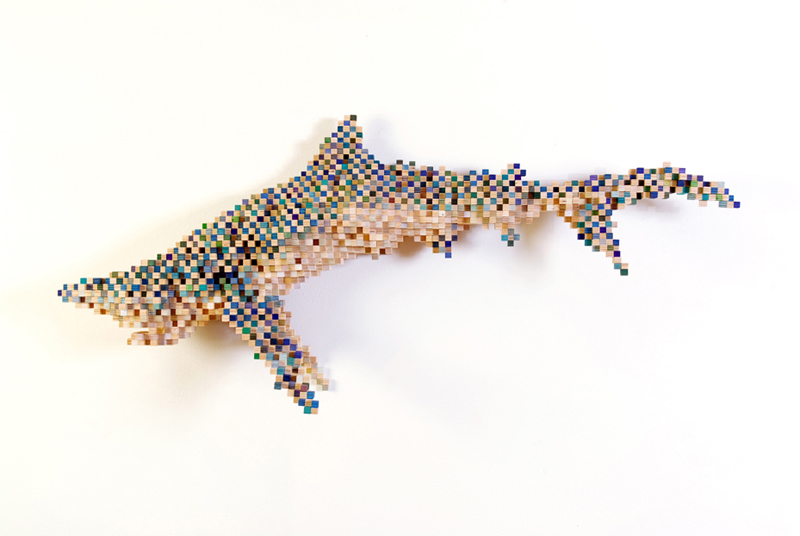

Re-Things
Austin based artist Shawn Smith has always been interested in the intersection of the digital world and reality, especially how we perceive the combination of pixels to represent nature. The process of creating these 8-bit sculptures starts with a large sheet of plywood that is cut into ½" strips ranging ½" to 2" long. All of the individual pieces are hand dyed before assembling them together.
More on Shawn Smith and his art | Via Fubiz